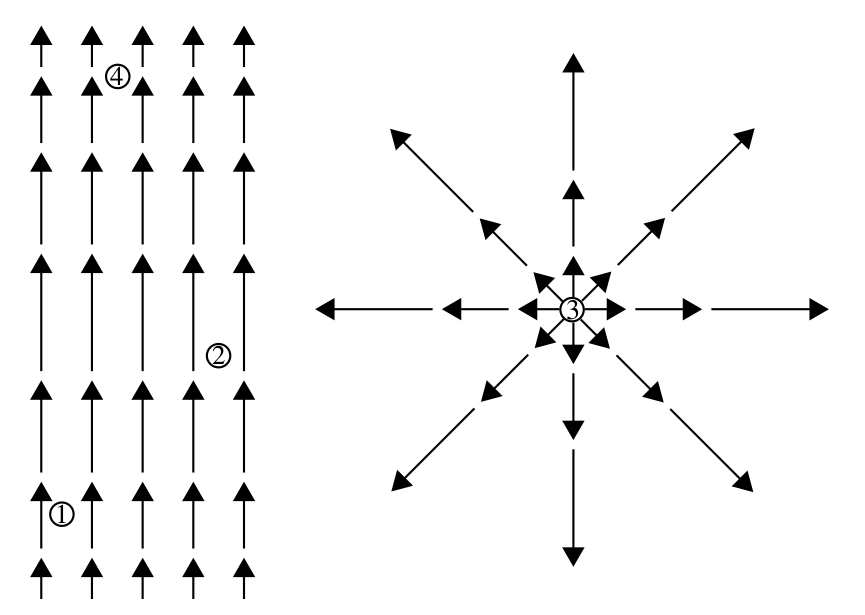
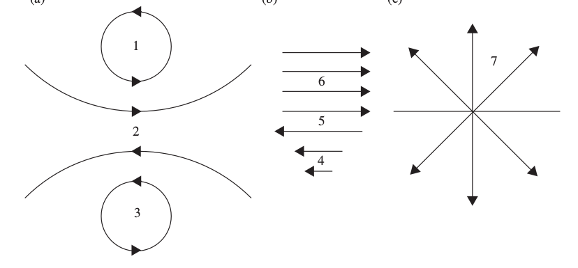
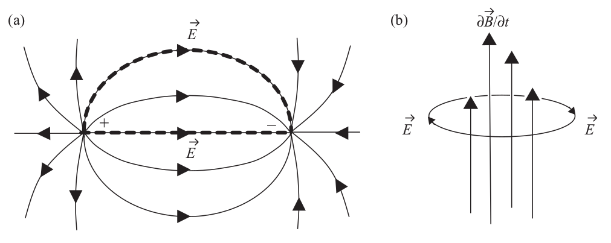
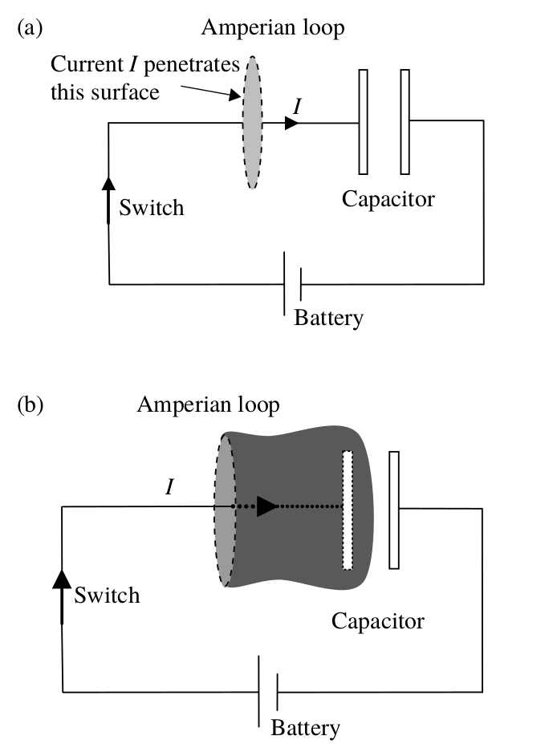
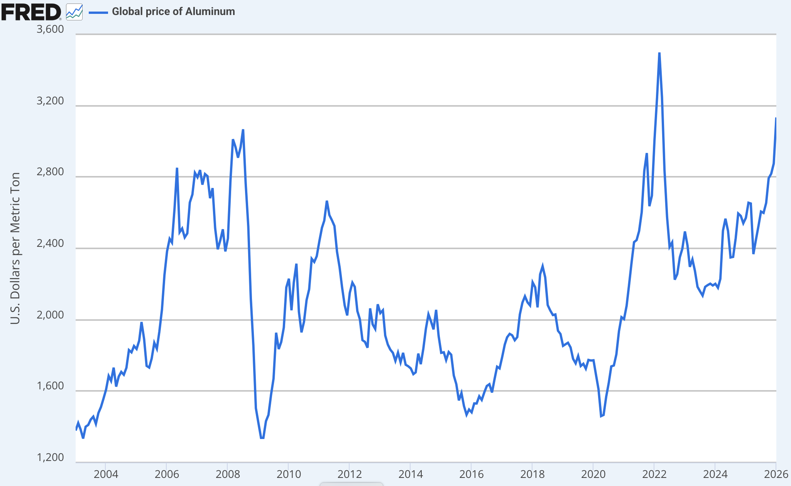
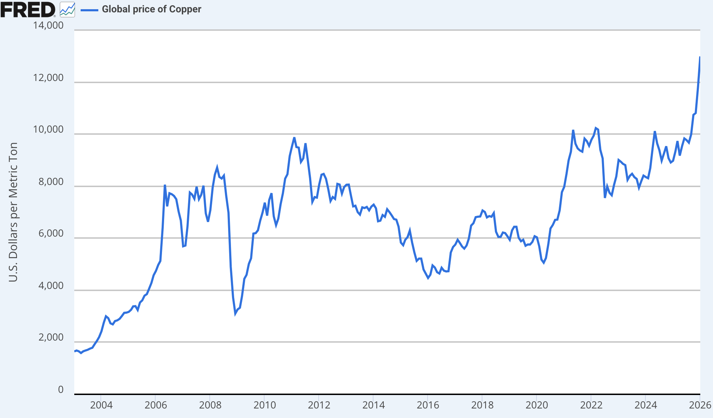
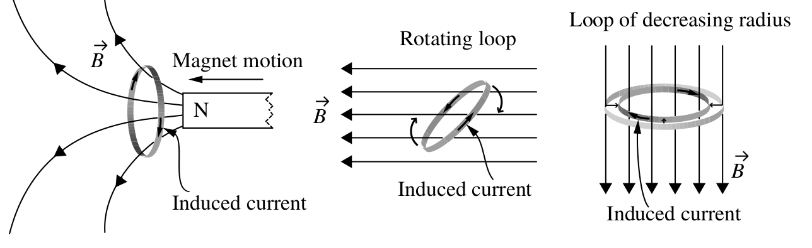

class: center, middle # EE-568 Selected Topics in Electrical Machines ## Ozan Keysan [ozan.keysan.me](http://ozan.keysan.me) Office: C-113 <span class="meta">•</span> Tel: 210 7586 --- ### Electric motors can be small -- ### Each one of you carry at least one of these: -- <img src="http://upload.wikimedia.org/wikipedia/commons/e/ee/Vibramotor.jpg" alt="Drawing" style="width: 350px;"/> --- # Electric Machines ### But they can also be big: <img src="http://upload.wikimedia.org/wikipedia/commons/c/c2/Siemens_Schottel_Propulsor.jpg" alt="Drawing" style="width: 450px;"/> Siemens Ship Propulsion Motors (Induction Motor) --- ## Very Big <img src="http://www.intechopen.com/source/html/38933/media/image37.jpeg" alt="Drawing" style="width: 360px;"/> <img src="http://media.treehugger.com/assets/images/2011/10/enercon-e126-002.jpg" alt="Drawing" style="width: 300px;"/> Enercon 7.5 MW, Direct-Drive Wind Turbine Generator (Synchronous Motor) --- ## Very Very Big: [700 MW Synchronous Generator](https://www.itaipu.gov.br/en/energy/generating-units) -- <img src="https://raw.githubusercontent.com/ozank/ozank.github.io/master/presentations/images/itaipu_hydro.png" alt="Drawing" style="width: 360px;"/> ### Itaipu Dam, Brasil: 16 m diameter, 91 rpm, Rotor Mass: 2650 t --- ## In Industry, -- what percentage of energy used by electric motors? -- - # 65% -- ## What is the percentage of energy used by electric motors overall? -- - # 45% -- ## What is the percentage of energy produced by electric machines? -- - # 97% --- # Richard Feynman: Electricity -- <iframe width="750" height="500" src="https://www.youtube-nocookie.com/embed/kS25vitrZ6g?rel=0&showinfo=0" frameborder="0" allow="autoplay; encrypted-media" allowfullscreen></iframe> --- ## So let's see how these machines work? -- <img src="https://www.bbvaopenmind.com/wp-content/uploads/2016/06/bbva-openmind-maxwell-1-ppal.jpg" alt="Drawing" style="width: 750px;"/> --- ## So let's see how these machines work? <img src="https://media-cdn.tripadvisor.com/media/photo-s/0d/5c/3a/3d/maxwell-statue.jpg" alt="Drawing" style="width: 750px;"/> --- # Maxwell Equations ### $$ \nabla\cdot{\bf E} = \dfrac{\rho}{\epsilon_0} $$ ### $$ \nabla\cdot{\bf B} = 0 $$ ### $$ \nabla\times{\bf E} = - {{\partial{\bf B}}\over{\partial t}} $$ ### $$ \nabla\times{\bf H} = {\bf J} + {\epsilon_0{\partial{\bf E}}\over{\partial t}} $$ #### [More info](http://www.maxwells-equations.com/), [Who's afraid of Maxwell equations?](http://majr.com/docs/Whos_Afraid_of_Maxwells_Equations_By_Elya_Joffe.pdf) --- # Maxwell Equations: ### $$\textrm{Gauss' Law}\quad \nabla \cdot \vec{E} = \frac{\rho}{\varepsilon_0} $$ -- ### $$\textrm{Faraday's Law} \quad \nabla \times \vec{E} = - \frac{\partial \vec{B}}{\partial t}$$ -- ## Need a reminder for vector calculus? ## [Curl](http://betterexplained.com/articles/vector-calculus-understanding-circulation-and-curl/), [Divergence](http://betterexplained.com/articles/divergence/), [Cross Product](http://betterexplained.com/articles/vector-calculus-understanding-the-dot-product/) --- # Divergence: \\(\nabla \cdot\\)  -- ## 1,2,3: Positive divergence, 4: Negative --- # Curl: \\(\nabla \times \\)  -- ## 1,2,3,4,5: High Curl, 6-7: No Curl --- ### $$\textrm{Faraday's Law} \quad \nabla \times \vec{E} = - \frac{\partial \vec{B}}{\partial t}$$  --- # Gauss' Law: # $$ \nabla \cdot \vec{E} = \frac{\rho}{\varepsilon_0} $$ -- ## Integral form: # $$\oint_S {E dA} = {Q \over \varepsilon_0}$$ --- # Gauss' Law (for Magnetic Field): ## $$\nabla \cdot \vec{B} = 0 $$ -- ## $$\oint_S {B dA} = 0$$ -- ### Practical Meaning: ### - There are no magnetic flux sources. ### - No magnets with single pole! --- # Faraday's Law ### !! The most important equation for motor design -- ### $$\nabla \times \vec{E} = - \frac{\partial \vec{B}}{\partial t}$$ -- ### $$\oint_C \vec{E} dl = - \frac{\partial \Phi}{\partial t} = -\frac{d}{dt}\iint B dA$$ ### (-) Sign: Lenz Laz -- ### [Induction Melting](https://www.youtube.com/watch?v=8i2OVqWo9s0), [Levitation](https://www.youtube.com/watch?v=txmKr69jGBk) --- # Ampere's Law: -- ### $$\nabla \times \vec{H} = \vec{J} + \varepsilon_0\frac{\partial \vec{E}}{\partial t}$$ -- ### Neglecting the [displacement current](https://en.wikipedia.org/wiki/Amp%C3%A8re%27s_circuital_law) part (i.e. quasi-static state) ### and in integral form. ### $$\oint_C {\vec{H}.d\vec{\ell}} = \iint \vec{J}dA = \sum I_n $$ --- # Ampere's Law: ### Problem of neglecting displacement current:  --- # Ampere's Law: ### $$\oint_C {\vec{H}.d\vec{\ell}} = \iint \vec{J}dA = \sum I_n $$ ### Magnetic field intensity(H) is independent of the material properties!  --- ## Material Properties: -- ## \\(\sigma\\) -- : Conductivity -- ## \\(\rho\\) -- : Resistivity -- # \\(\mathbf{J}=\sigma \mathbf{E}\\) -- ## Resistivity and Conductivity of Copper? -- ## \\(\sigma = 5.96\,10^{7}\\) -- S/m, or 1/Ωm -- ## \\(\rho = 1.68\,10^{-8}\\) Ωm --- ## Material Properties: -- ## \\(\varepsilon\\) -- : Electric Permittivity -- # \\(\mathbf{D}=\varepsilon \mathbf{E}\\) -- ## \\(\varepsilon_0\\): Permittivity of free space -- ## \\(\varepsilon_0= 8.85\,10^{-12}\\) -- F/m, or -- As/Vm ### Materials with high permittivity (dielectric constant) used in capacitors, (mica, ceramis, metal oxides etc) --- ## Material Properties: -- ## \\(\mu\\) -- : Magnetic Permeability -- # \\(\mathbf{B}=\mu \mathbf{H}\\) -- ## \\(\mu_0\\): Permeability of free space -- ## \\(\mu_0= 4\pi\,10^{-7}\\) -- H/m, or -- Vs/Am ### Materials with high permeability (ferromagnets) used in inductors --- # Material Properties -- ## Other Important Parameters for Motor Design -- # Thermal: - ## Thermal Conductivity, Heat Capacity... -- # Mechanical: - ## Density, Strength, Young's Modulus... --- # Material Properties: -- ## Isotropic: -- Parameter is constant for all directions ## e.g.: \\(\mu_x=\mu_y=\mu_z\\) -- ## Otherwise it is anisotropic -- ## Can be constant (linear material) -- ## Can be non-linear (for example magnetic saturation) -- ## Can be depedent to temperature (e.g. conductivity)... --- ## Electric Materials -- ## Conductors: -- Copper, Aluminium, Iron... -- ## Insulators: Plastic, Air... -- ## How conductive copper is compared to air? -- ### Copper is \\(10^{22}\\) times more conductive than air. -- ### Copper is \\(10^{7}\\) times more conductive than sea water. --- # Electric Materials ## What is the best conductor? -- - ## **Copper:** \\(1.68 \; 10^{-8} \; \Omega.m \\) -- - ## **Aluminium:** \\(2.82\; 10^{-8} \; \Omega.m \\) -- - ## **Silver:** \\(1.59 \; 10^{-8} \; \Omega.m \\) -- - ## **Gold:** \\(2.44 \; 10^{-8} \; \Omega.m \\) --- ## Why some connectors are gold plated?  ### Gold Plated High Speed HDMI cable [1400 TL](https://www.hepsiburada.com/qed-qe-6024-performance-active-hdmi-kablo-15-mt-p-HBV00000OM1LM): SCAM! --- # What about the price? -- # Copper vs. Aluminium --  --- # What about the price? # Copper vs. Aluminium  --- # Electric vs. Magnetic Materials -- ## Conductors --> -- Ferromagnets -- (e.g. Iron, Cobalt) ## Large permeability ( `\(\mu_r >> 1\)`) <img src="https://c1.staticflickr.com/3/2716/4468925382_6c3ceecbfe.jpg" alt="Drawing" style="width: 450px;"/> --- # Non-magnetic Materials -- ## Paramagnetic ### ( `\(\mu_r \gtrsim 1\)`) (very slightly attracted) ### E.g.:Aluminium -- ## Diamagnetic ### ( `\(\mu_r \lesssim 1\)`) (very slightly repulsed) ### E.g.: Copper, Water, [Frogs](https://www.youtube.com/watch?v=KlJsVqc0ywM) --- # Electric Circuits ## Analogy to Hydraulic System ### - Voltage --> Pressure ### - Electric Current --> Water Current ### - Hydraulic Resistance --> Resistance --- # Magnetic Circuits ## Magnetic circuits are analogous to electric circuits: <img src="magnetic_electric_circuit.png" alt="Drawing" style="width: 800px;"/> --- # Magnetic Circuits ## Materials: | Electric Circuits | Magnetic Circuits | | -- | -- | -- | | **Conductors:** Copper, Aluminum | **Ferromagnets**: Iron, Electrical Steel | | **Insulators:** Air, Plastic | **Non-magnetics:** | ||Copper, Water (Diamagnetic)| || Air, Aluminum (Paramagnetic) | --- # Magnetic vs Electric Circuit -- ## Copper is \\(10^{22}\\) times more conductive than air. -- ## What about permeability of Iron vs Air? -- ## Iron is JUST 3000 times more "permeable" than air ## Therefore, air is a circuit element in magnetic circuits! --- # Magnetic Circuits ## Flux (Wb) -- ## Flux Density (Wb/m\\(^2\\) or T) -- ## Magneto-motive Force (MMF), (A.turns) --- # Ohm's Law (for Magnetic Circuit) ### Electric Circuits: ### $$V=IR$$ -- ### Magnetic Circuits ### $$\mathcal{F} = \Phi \mathcal{R}$$ -- ### Reluctance ### $$\mathcal{R} = \frac{l}{\mu A}$$ --- # A note on symbols. ## $$\mathcal{F} = \Phi \mathcal{R}$$ ## In some [textbooks](https://books.google.com.tr/books?id=7XkxDQAAQBAJ&pg=PA60&lpg=PA60&dq=current+linkage+MMF&source=bl&ots=sEturQtDGU&sig=bm5WgK8_CeKLG82Hq526OWLDn7E&hl=tr&sa=X&ved=0ahUKEwj4lezSoLDZAhVKCcAKHR8RBKsQ6AEIJzAA#v=onepage&q=current%20linkage%20MMF&f=false): -- - ## Magneto-motive force = NI = [Current Linkage](http://www.electropedia.org/iev/iev.nsf/display?openform&ievref=121-11-46) -- ## $$ NI = MMF =\mathcal{F} = \Theta$$ ### For latest offical, symbols refer to [IEC Standars](http://www.electropedia.org/iev/iev.nsf/index?openform&part=121) ### [Conventional Magnetic Symbols](https://www.d.umn.edu/~snorr/ece4501s4/MAGCKTS.PDF) --- # Current Density vs. Magnetic Flux Density ## Current Density = Conductivity x Electric Field ## $$\vec{J}=\sigma \vec{E}$$ -- ## Flux Density = Permeability x Magnetic Field ## $$\vec{B} = \mu \vec{H}$$ --- # Magnetic Circuits ### Magnetic circuits are analogous to electric circuits: <img src="magnetic_electric_circuit.png" alt="Drawing" style="width: 800px;"/> --- # Linearity vs. Non-linearity -- ## $$\vec{B} = \mu \vec{H} $$ -- # Linear B-H Characteristics - ## Air --- # B-H Curve of Air (Linear) -- <img src="http://www.itacanet.org/wp-content/uploads/2011/06/mag-600x521.jpg" alt="Drawing" style="width: 300px;"/> -- - ## Slope gives permeability (\\(\mu = \frac{B}{H}\\)) -- - ## Constant Slope = Linear Material --- ## Non-Linear B-H Characteristics - ### Iron, Cast-Steel ... -- <img src="http://www.itacanet.org/wp-content/uploads/2011/06/fermags-600x488.jpg" alt="Drawing" style="width: 400px;"/> ## B is limited by saturation --- # Magnetic Saturation ## Residual Magnetism <img src="http://www.edmsauce.com/wp-content/uploads/2014/05/Sonys-New-Cassette-Tape-Holds-64750000-Songs.jpg" alt="Drawing" style="width: 320px;"/> -- <img src="http://www.rayhaber.com/wp-content/uploads/ego_karti.jpg" alt="Drawing" style="width: 350px;"/> --- # Hysteresis Loss <img src="http://www.electronics-tutorials.ws/electromagnetism/mag19.gif" alt="Drawing" style="width: 400px;"/> -- <img src="http://www.stanelcorftechnologies.com/img/hysteresis-loss.jpg" alt="Drawing" style="width: 320px;"/> -- ## Hysteresis Loss \\(\propto\\) Frequency --- # Hysteresis Loss ## Variable Hmax <img src="http://www.insulcoresolutions.com/images/Hysteresis-L-web.jpg" alt="Drawing" style="width: 600px;"/> --- # Lenz's Law ## Why there is a negative sign? ## \\(e = -\frac{d \Phi}{dt}\\) -- ### An induced electromotive force (emf) always gives rise to a current whose magnetic field opposes the original change in magnetic flux. --- # Eddy Current Losses ### Created by Induced Voltage in a Conductor <img src="https://qph.ec.quoracdn.net/main-qimg-2281a0706817db86c3543886405ab1d5" alt="Drawing" style="width: 400px;"/> #### [Magnet in a Copper Tube](http://www.youtube.com/watch?v=keMpUaoA3Tg) -- ### Power Dissipated: \\(P= \frac{ V \pi^2 B_{peak}^2 d^2 f^2}{k \rho}\\) --- # Hysteresis Loss \\(\propto\\) Frequency # Eddy Loss \\(\propto\\) Frequency\\(^2\\) --- # Applications ### Eddy Current Brake ### Induction Heater <img src="http://www.ahousebythepark.com/journal/wp-content/uploads/2009/02/induction.jpg" alt="Drawing" style="width: 300px;"/> [Levitating Coil](http://www.youtube.com/watch?v=VydPQuLyEns), [Induction Heater](http://www.youtube.com/watch?v=aOsbIP3y2Wg) --- ## Assumptions we used to make in EE361, but not in this course -- ## - All flux contained in magnetic circuit (no leakage) -- ## - Uniform flux distribution in the core -- ## - Flux travels straight in airgaps (no fringing) -- ## - In some cases infinite permeability is assumed --- # Faraday's Law of Induction -- ### \\(\nabla \times \vec{E} = - \dfrac{\partial \vec{B}}{\partial t}\\) ### which equals to: -- ### $$\oint_C \vec{E} dl = - \dfrac{d\Phi}{dt} = -\dfrac{d}{dt}\iint \vec{B} dA$$ --- # Faraday's Law of Induction ### Induced Voltage in a Coil ## $$ e= \oint \vec{E} dl = -\dfrac{d \Phi}{dt}$$ ## $$ e = -\dfrac{d \Phi}{dt} = -\dfrac{d}{dt}\int \vec{B} dA$$ --- # Ways to generate voltage in a coil -- - ## Time variation of flux (e.g. AC excitation) -- - ## Due to conductor movement in a stationary field -- - ## Rotation (e.g. motors) -- - ## Deformation of coil (Area changes)  --- # Faraday's Law of Induction ## Total voltage in a coil with N turns ## \\(V_{coil} = N\dfrac{d \Phi}{dt} = \dfrac{d \lambda}{dt}\\) --- # Flux Linkage ### \\(\lambda\\) : Flux Linkage (Warning, in the textbook shown by [\\(\Psi\\))](http://www.electropedia.org/iev/iev.nsf/display?openform&ievref=121-11-24) ### \\(\Phi\\) : Flux per turn ### \\(\lambda = N_{turns} \Phi \\) (turn. Weber) <img src="http://img.tfd.com/mgh/cep/thumb/B-magnetic-flux-field-of-a-short-coil.jpg" alt="Drawing" style="width: 300px;"/> --- # Relation between Magnetic and Electric Circuits -- <img src="http://2.bp.blogspot.com/-Lm15GER7L20/VieZ0DjOoRI/AAAAAAAAAXA/RQHcpv7aBfk/s1600/inductor%2Bsymbol.jpg" alt="Drawing" style="width: 300px;"/> -- # \\( L = \dfrac{d \lambda}{d I}\\) --- # Relation between Magnetic and Electric Circuits ## What happens if you double the number of turns? -- ## Inductance increases with \\(N^2\\) --- # Inductance ## Inductance is the flux linkage created per ampere ## \\( L = N \dfrac{d \Phi}{dI}= \dfrac{d \lambda}{d I}\\) ## \\( L = \dfrac{N^2}{R}\\) --- # Mutual Inductance: ## Magnetic Interaction between two coils. ## Exists if current in one coil induces voltage in another coil. [Example](https://www.miniphysics.com/uy1-mutual-inductance.html) --- # Mutual Inductance: ## \\( V_{2} = M \frac{dI_1}{dt} \\) <img src="https://raw.githubusercontent.com/ozank/ee361/master/images/mutual_flux.png " alt="Drawing" style="width: 380px;"/> --- # Magnetic Stored Energy ## What is the energy stored in an inductor? -- ## \\(W = \dfrac{1}{2} L i^2 \\) ## But why? And what if L is variable? --- # Magnetic Energy ## \\(dw = \mathcal{F}(t) d \Phi(t) \\) -- ## \\(W = \int_{\Phi_1}^{\Phi_2} \mathcal{F} d \Phi \\) -- ## Magnetic Energy Density ## \\(W = \int_{B_1}^{B_2} H d B \\) --- # Total Energy Stored (Linear Systems) ## Initial B=0 ## \\(W = \dfrac{1}{2}R \Phi^2 =\dfrac{1}{2}\dfrac{\mathcal{F}^2}{R}\\) or ## \\(W = \dfrac{1}{2}\dfrac{Volume}{\mu} B^2 \\) --- ## You can download this presentation from: [keysan.me/ee564](http://keysan.me/ee564)